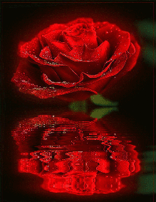
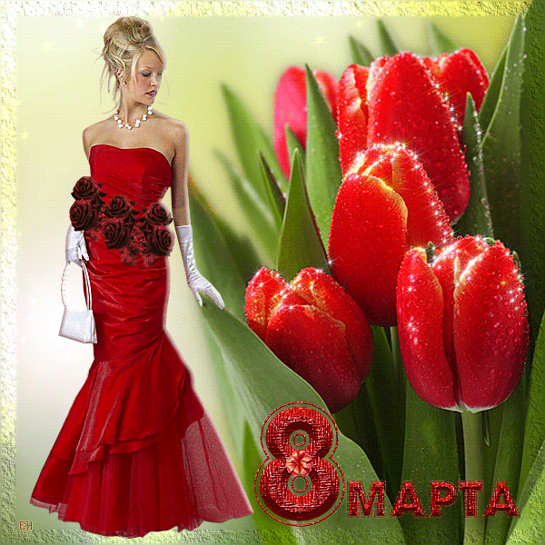

Главное меню:




Поздравления с 8 Марта
Пусть в жизни будет все как прежде:
Любовь, уверенность, надежда,
Движение к цели и удача,
А сердце - добрым и горячим!
Пусть обойдёт вас непогода,
И осень мчит пусть стороной,
И пусть любое время года
Для Вас всегда звучит весной! :)
Любовь, уверенность, надежда,
Движение к цели и удача,
А сердце - добрым и горячим!
Пусть обойдёт вас непогода,
И осень мчит пусть стороной,
И пусть любое время года
Для Вас всегда звучит весной! :)
Спасибо вам за вашу доброту!
За ваше русское великое терпенье,
За лишний нерабочий день в году,
За день обычный, ставший воскресеньем!
За ваше русское великое терпенье,
За лишний нерабочий день в году,
За день обычный, ставший воскресеньем!
Пусть сгинут бури и ненастья,
Уйдут пускай навеки в тень.
Мы Вам желаем только счастья
В Ваш самый добрый, светлый день!
Уйдут пускай навеки в тень.
Мы Вам желаем только счастья
В Ваш самый добрый, светлый день!
Весна приносит обновленье,
Улыбки, счастье и цветы.
И я хочу, чтоб в день весны рожденье
Твои исполнились мечты!
Улыбки, счастье и цветы.
И я хочу, чтоб в день весны рожденье
Твои исполнились мечты!
Пусть отблеск зимний еще не угас,
Но воздух становится зыбким.
С Женским весенним праздником Вас,
С первой весенней улыбкой!
Но воздух становится зыбким.
С Женским весенним праздником Вас,
С первой весенней улыбкой!
Твои любимые цветы
Согрею я своим дыханьем
В день Женского Очарованья.
Они прекрасны, как и ты!
И пусть исполнятся мечты,
И сбудутся Весны желанья,
И сердцу милые черты
Пленяют также обаяньем!
С праздником!!!!
Согрею я своим дыханьем
В день Женского Очарованья.
Они прекрасны, как и ты!
И пусть исполнятся мечты,
И сбудутся Весны желанья,
И сердцу милые черты
Пленяют также обаяньем!
С праздником!!!!
Не знай забот, живи счастливо,
Чтоб говорили все всегда:
Как эта женщина красива,
Как бесконечно молода!
Чтоб говорили все всегда:
Как эта женщина красива,
Как бесконечно молода!
С днем 8 Марта! С праздником весенним!
Льется пусть повсюду Звонкое веселье!
Пусть сияет солнце! Пусть уйдут морозы!
Пусть прогонит зиму Веточка мимозы!
Льется пусть повсюду Звонкое веселье!
Пусть сияет солнце! Пусть уйдут морозы!
Пусть прогонит зиму Веточка мимозы!
Пусть первый подснежник
Подарит Вам нежность!
Весеннее солнце подарит тепло!
А мартовский ветер подарит надежду,
И счастье, и радость, и только добро!
Подарит Вам нежность!
Весеннее солнце подарит тепло!
А мартовский ветер подарит надежду,
И счастье, и радость, и только добро!
Пусть радостью сегодня солнце светит,
В тени оставив сноп больших тревог,
И все цветы, какие есть на свете,
Цветут сегодня пусть у Ваших ног.
В тени оставив сноп больших тревог,
И все цветы, какие есть на свете,
Цветут сегодня пусть у Ваших ног.
Пусть этот день счастливым будет,
И все сбываются мечты.
Пусть солнце светит Вам повсюду,
И улыбаются цветы.
И все сбываются мечты.
Пусть солнце светит Вам повсюду,
И улыбаются цветы.
Вы прелестны, словно розы,
Только разница одна:
Розы вянут от мороза,
Прелесть женщин - никогда!
Только разница одна:
Розы вянут от мороза,
Прелесть женщин - никогда!
Желаю счастья и любви.
Они дороже всех подарков.
И пусть все сбудутся мечты,
В прекрасный день - 8 Марта!
Они дороже всех подарков.
И пусть все сбудутся мечты,
В прекрасный день - 8 Марта!
8 Марта - день торжественный,
День радости и красоты.
На всей земле он дарит женщинам
Свои улыбки и цветы.
День радости и красоты.
На всей земле он дарит женщинам
Свои улыбки и цветы.
С днем весенним, не морозным,
С днем веселым и мимозным,
С днем безоблачным и снежным,
С днем взволнованным и нежным,
С днем просторным и сюрпризным
Нашим славным женским днем!
С днем веселым и мимозным,
С днем безоблачным и снежным,
С днем взволнованным и нежным,
С днем просторным и сюрпризным
Нашим славным женским днем!
Все, что в жизни звучит красиво,
Мы хотим пожелать и Вам:
Чтоб любовь никогда не кончалась,
Беда и печаль на пути не встречались.
Огромного счастья, отличных друзей,
Здоровья, успехов и солнечных дней.
Мы хотим пожелать и Вам:
Чтоб любовь никогда не кончалась,
Беда и печаль на пути не встречались.
Огромного счастья, отличных друзей,
Здоровья, успехов и солнечных дней.
С началом весны! С вашим праздником светлым,
Таким обаятельным, полным щедрот!
Пусть каждый Ваш день будет самым заветным,
Пусть будет значительным каждый ваш год!
Таким обаятельным, полным щедрот!
Пусть каждый Ваш день будет самым заветным,
Пусть будет значительным каждый ваш год!
С теплом! С надеждами! С мимозами!
С прекрасным праздником весны!
Пускай глаза сияют звездами
И вечно будут влюблены!
С прекрасным праздником весны!
Пускай глаза сияют звездами
И вечно будут влюблены!
Пусть невзгоды жизни пролетают мимо,
Как ручей весною пусть играет кровь!
Я тебе желаю быть всегда любимой
И в любые годы чувствовать любовь.
Как ручей весною пусть играет кровь!
Я тебе желаю быть всегда любимой
И в любые годы чувствовать любовь.
Разрешите пожелать Вам Счастья, мира и тепла!
Пусть сопутствует удача, Чувство юмора всегда!
И чтобы в жизни ни случилось –
Вы сохраните мудрые слова:
Пока женщина смеется, Значит, женщина жива!
Пусть сопутствует удача, Чувство юмора всегда!
И чтобы в жизни ни случилось –
Вы сохраните мудрые слова:
Пока женщина смеется, Значит, женщина жива!
* * *
До всіх найкращих поздоровлень
Прийміть іще одне вітання:
Любові, щастя і здоров’я
Нехай в душі цвіте кохання!
* * *
Поздравляем с праздником —
Женским днем,
И желаем радости
И удач во всем.
* * *
Нехай ця чудова весняна пора
Стане джерелом достатку й добра.
Хай ясний промінчик, мов сонячний птах,
Ніколи не згасне у Ваших очах.
* * *
Пусть сердце в такт стучит капели,
Пусть канут в прошлое метели,
И пусть в весенних хороводах
Забудет сердце о невзгодах.
* * *
Хай навкруги цвіте бузок,
Та небо буде ясним.
І щоб життя було в жінок
Щасливим і прекрасним.
* * *
Читайте: Як помститися чоловікові за 8 Березня. 12 найсмішніших запитів
* * *
Желаем счастья много — много,
Кусочек неба голубого,
А в нем — желанную звезду:
Свою любовь, свою мечту!
* * *
Хай зігрівають душу вам красою
Весни тендітні пелюстки,
І розливаються джерельною водою
Кохання й щастя гомінкі струмки.
* * *
С 8 марта тебя поздравляю,
Наслаждаясь дыханьем весны.
Много счастья тебе я желаю,
Пусть исполнятся все твои мечты.
* * *
Посміхнись! Розтанув сніг,
Щастя падає до ніг,
Нині твій весняний день,
Сонця, квітів і пісень!
* * *
Пусть невзгоды жизни пролетают мимо,
Как ручей весною пусть играет кровь!
Я тебе желаю быть всегда любимой
И в любые годы чувствовать любовь.
* * *
С прекрасным праздником весны
Мы Вас сердечно поздравляем.
Здоровья, счастья и любви
От всей души мы Вам желаем!
И солнце пусть Вам ярко светит,
И птички радостно поют,
Пусть в Вашем доме воцарятся
Веселье, мир, тепло, уют.
Когда вокруг звенит капель
И раздается птичек пение,
Почувствуйте весны приход —
Примите наши поздравления!
Так много ласки и тепла,
Загадки, нежности, терпения
Природа женщине дала.
И всё по праву, без сомнения!
Так будьте ж вы всегда красивы,
Глаза пускай горят огнём,
Здоровы, молоды, любимы.
С Международным женским днем!
Милые женщины! Поздравляю вас с 8 Марта! Этот красивый праздник в начале весны приходит к нам, когда всё оживает, расцветает и распускается. Пусть в вашей жизни будет вечная весна, пусть ярко светит солнце, пусть поют птицы, пусть дни будут светлыми и безоблачными. Улыбок, хорошего настроения, радости, счастья!
Для Вас все ярче светит солнышко
И распускаются цветы,
Пусть все желания исполнятся,
Пускай сбываются мечты.
Пусть все проблемы и печали,
Как снег растают без следа,
Желаем радости, здоровья,
Чтоб были счастливы всегда.
Чтоб с самым лучшим настроеньем
По жизни шли Вы, с огоньком.
С чудесным праздником весенним —
Международным женским днем!
В прекрасный день 8 Марта
Пускай волнуется душа,
От комплиментов станет жарко
И закружится голова.
Пусть сердце наполняют радость,
Гармония и красота,
Из милых глаз уйдет усталость
И не вернется никогда!
Пускай волнуется душа,
От комплиментов станет жарко
И закружится голова.
Пусть сердце наполняют радость,
Гармония и красота,
Из милых глаз уйдет усталость
И не вернется никогда!
Прекрасный день календаря —
8 Марта — женский праздник.
Мы поздравляем от души
Прекрасных дам, желаем счастья!
Погоды теплой вам в семье,
Любви, добра и понимания,
Комфорта, нежности в душе
И каждодневного внимания!
Пусть будет радостной весна,
А солнце светит безгранично.
Горят от счастья пусть глаза,
Чтоб было всё отлично!
Женский день — прекрасный праздник,
Полный нежности, тепла.
В этот день сама природа
Пробудилась ото сна.
Всем мечтам желаю сбыться
По возможности скорей:
Непременно встретить принца,
Выглядеть еще стройней.
Кушать тортики, конфеты,
По утрам подольше спать
И про разные диеты
Ничего совсем не знать.
Загорать у океана,
Шестизначный счет иметь
И, конечно же, с годами
Ни на день не постареть.
Желаю в этот день весенний,
Чтобы душа от счастья пела,
Успехов, новых достижений,
Прекрасной быть душой и телом!
Пускай мечты и все капризы
Осуществятся без труда,
И лишь приятные сюрпризы
Пусть дарит жизнь тебе всегда!
Ну вот и кончились морозы,
И в мире царствует весна.
Прекрасны женщины, как розы.
Поздравить вас пришла пора!
От всей души вас поздравляем,
С Международным женским днем.
Любви и счастья вам желаем,
Чтобы везло всегда, во всём!

С Международным женским днем!
Желаю Вам весны, любви, признаний,
Объятий, искренних и нежных, теплых слов,
А также исполнения желаний.
Здоровья, легкости, полета, красоты,
Успехов грандиозных, впечатлений.
Желаю, чтобы чаще улыбались Вы
От радостно-волнующих мгновений.
Желаю Вам весны, любви, признаний,
Объятий, искренних и нежных, теплых слов,
А также исполнения желаний.
Здоровья, легкости, полета, красоты,
Успехов грандиозных, впечатлений.
Желаю, чтобы чаще улыбались Вы
От радостно-волнующих мгновений.

Порой мужчины забывают
О праздниках, ведь жизнь их кружит.
Зато они уж точно знают:
День Женский — он, конечно, нужен.
Родные наши и не очень,
А также все-все-все подруги,
Вы идеальны, это точно!
Опять мы вам целуем руки!
Когда весна в окно стучится,
... а на пороге уже март,
Разбейте лед, пусть всё случится,
Умножьте чувства на азарт!
Женский день 8 Марта
Поздравления принес:
Вы достойны бриллиантов,
Миллиона алых роз!
Пусть душа поет от счастья,
А в глазах сияет свет.
Пусть удача и надежда
Будут с вами много лет!
Я необычного желаю
В Международный женский день:
Пусть в этот добрый славный праздник
Вас посетит большая лень.
Чтоб вы забыли про работу,
Готовку щей, полов мытьё
И отложили бы подальше
Всю глажку, стирку и шитьё.
Лишь отдыхали, веселились —
На это право есть у вас.
Здоровья, счастья вам большого
На каждый день и каждый час.
Поздравляю с чудесным праздником, с праздником женской красоты и очарования, с праздником весеннего вдохновения и светлой радости. В день 8 марта от всей души желаю постоянного ощущения счастья, ежедневного веселья души, волшебных чувств любви и нежности, прекрасного настроения и непобедимого интереса ко всему новому в жизни.
Прекрасный день, весны рассвет,
Природа снова оживает.
Ни для кого то не секрет,
Чья красота ее питает.
Так много хочется сказать
И пожелать вам в праздник этот:
Любить, цвести, не увядать,
Быть украшением планеты.
Улыбка ваша — солнца свет.
Глаза — как неба бесконечность.
Без вас на свете жизни нет,
Лишь с вами есть у жизни вечность.
В этот день 8 Марта
Хочется вам пожелать
От души повеселиться,
Чтоб не вздумали скучать.
В спутники себе берите
Счастье, радость и успех,
Чтобы слышен был повсюду
Ваш веселый, звонкий смех.
Красоты вам и удачи,
Радости, всех благ, любви,
Чтоб для вас по жизни пели
Свои трели соловьи.
Хочется вам пожелать
От души повеселиться,
Чтоб не вздумали скучать.
В спутники себе берите
Счастье, радость и успех,
Чтобы слышен был повсюду
Ваш веселый, звонкий смех.
Красоты вам и удачи,
Радости, всех благ, любви,
Чтоб для вас по жизни пели
Свои трели соловьи.
Звонкий, чистый март пришел,
Праздник он с собой привел.
Женщин нежно поздравляем,
Счастья светлого желаем.
Чтобы жили без забот
День за днем, за годом год.
Не болели, не старели,
И как звездочки горели.
Пожелания примите,
Всем тепло свое дарите.
Чаще смейтесь, улыбайтесь,
Этой жизнью наслаждайтесь.
Не печальтесь ни когда,
Пусть не тронет вас беда.
И удачу пусть несет
Этот день на целый год.

Пусть расцветает все кругом,
И будет жизнь прекрасным раем!
С Международным женским днем
Сегодня женщин поздравляем!
Вам пожелать хотим тепла,
Любви большой и много света,
Чтобы счастливой жизнь была
И сладкой, будто бы конфета!
Прекрасных женщин поздравляем
С Международным женским днем!
И от души мы вам желаем,
Активность била чтоб ключом.
Пусть блеск в глазах не угасает,
В душе цветет всегда весна,
А счастье пусть не покидает
Вас ни за что и никогда!
Пусть весна подарит много счастья,
Женского и самого простого.
Ангел пусть оберегает от ненастья.
Чуда вам и наслажденья неземного!
Достают для вас пусть с неба звезды,
Строят замки, дарят много роз.
Пусть в семейной жизни будет просто,
Радостно, уютно и без слез.

Есть много праздников чудесных,
Но женский день неповторим,
Всех добрых, нежных и прекрасных,
Всех женщин мы боготворим,
Ведь жизнь без вас теряет краски,
И, невзирая на года,
Будьте любимы и прекрасны,
Родные женщины всегда!
Но женский день неповторим,
Всех добрых, нежных и прекрасных,
Всех женщин мы боготворим,
Ведь жизнь без вас теряет краски,
И, невзирая на года,
Будьте любимы и прекрасны,
Родные женщины всегда!
Весна спешит окутать этот мир
Волшебной дымкой из тепла и света.
А с миром распускается любовь,
И люди называют чудом это.
Пусть в ваших душах греется мечта,
Надежда распускается соцветием.
Пусть все тревоги, беды, маета
Останутся под зимним белым снегом.
В Международный женский день, сейчас,
Пусть сбудутся заветные желания.
Распустятся, как первые цветы,
Улыбка, нежность и очарование.
8 Марта — праздник милых дам.
Пускай он будет светлым, ясным.
И пожелать хотим мы вам
Побольше в жизни дней прекрасных!
Желаем счастья полный дом,
Улыбок, радости, веселья.
Чтобы всегда везло во всём,
Не покидало вдохновение!
Чтобы ценили вас друзья.
Любимые дарили ласку.
Не знали горя никогда,
И жизнь пусть будет доброй сказкой!
В этот чудесный день весенний
Хочу послать Вам поздравления!
Пусть дом наполнится теплом,
Любовью, верностью, добром.
Пусть Ваша красота цветет,
Стабилен будет пусть доход.
Пусть мир вокруг приносит радость,
Пусть счастье не теряет сладость,
Пускай все смотрят с восхищением.
И принимайте поздравления!

Всех милых женщин на планете
Мы поздравляем в этот день.
Для всех вас солнышко пусть светит,
Играет звонкая капель.
Мы пожелаем вам здоровья,
Уюта в доме и тепла,
Заботы близких и внимания —
Сегодня, завтра и всегда!
Желаем вам, конечно, счастья.
И пусть уходят все ненастья,
Чтоб радовались вы всегда
Весны приходу и тепла!
Мы поздравляем в этот день.
Для всех вас солнышко пусть светит,
Играет звонкая капель.
Мы пожелаем вам здоровья,
Уюта в доме и тепла,
Заботы близких и внимания —
Сегодня, завтра и всегда!
Желаем вам, конечно, счастья.
И пусть уходят все ненастья,
Чтоб радовались вы всегда
Весны приходу и тепла!
С праздником весны, девчата,
Рыбки, солнышки, зайчата!
Был бы серым мир без вас —
Без ресниц, чулочков, страз.
Желаем быть всегда в ажуре —
При маникюре, педикюре,
Толпу поклонников иметь,
После шести без страха есть.
Пусть каждый день несет сюрпризы,
Осуществляются капризы,
А жизнь подарит вам букет
Из долгих и счастливых лет.
Дорогие наши дамы,
С женским праздником весны!
Будьте ярки и желанны,
Пусть все дарят вам цветы.
Будьте вечно молодыми
И красивы, как весна.
Будьте близкими любимы
И счастливыми сполна.
Только ярких ощущений,
Почитателей, друзей.
Вызывайте восхищенье
И живите веселей!
С женским праздником весны!
Будьте ярки и желанны,
Пусть все дарят вам цветы.
Будьте вечно молодыми
И красивы, как весна.
Будьте близкими любимы
И счастливыми сполна.
Только ярких ощущений,
Почитателей, друзей.
Вызывайте восхищенье
И живите веселей!

8 Марта — вечный праздник,
Он женский, светлый, он весенний.
Пускай же будет он прекрасным.
Особенным, с хорошим настроеньем.
Пускай весь мир цветет весны цветами,
Пусть солнце светит ярко и тепло.
А жизнь раскрасится пускай цветными снами,
И в ней пусть будут счастье и добро!

Международный женский день
Всегда мы в марте отмечаем.
Всех женщин в этот день весной
От всей души мы поздравляем.
Для них — все нежные слова,
Цветы, подарки, пожелания.
Улыбки пусть не сходят с губ
И сбудутся все их желания!

Море нежности подарит,
Март пусть светом озарит,
Все заветные желания
И мечты осуществит!
Для любви подарит время,
Для забот и для побед,
Солнце ярче светит с неба,
Чтоб был дом теплом согрет.
Радость пусть вуаль набросит
И, к мечте открыв ступень,
Только счастье пусть приносит
Самый-самый женский день!
Все прекрасное создано в женщине:
Блеск в глазах и стремления души.
Поздравляем же, лучшие, нежные,
До чего же вы все хороши!
Все слова, поздравления, признания
Адресованы только для вас.
Оставайтесь такими прекрасными,
Вдохновляйте на подвиги нас!
С Днем весны поздравляем сердечно
И желаем тепла, доброты.
И любви от мужчин бесконечной
И приятной волшебной весны!
Блеск в глазах и стремления души.
Поздравляем же, лучшие, нежные,
До чего же вы все хороши!
Все слова, поздравления, признания
Адресованы только для вас.
Оставайтесь такими прекрасными,
Вдохновляйте на подвиги нас!
С Днем весны поздравляем сердечно
И желаем тепла, доброты.
И любви от мужчин бесконечной
И приятной волшебной весны!

Уже весна, звенит капель.
В приподнятом все настроении.
Сегодня праздник — женский день.
Для вас, девчата, поздравление.
Встречайте каждый день с улыбкой,
Пусть будет на душе весна.
Любви бескрайней, вдохновения,
Чтоб счастьем жизнь была полна!
Удача пусть не покидает,
Во всех делах всегда везет,
От горя ангел охраняет,
Здоровье пусть не подведет.
Поздравления с 8 марта в прозе
Позвольте вас поздравить с праздником весны, красоты и любви - с 8-м Марта! Пусть сегодня ваша душа до краев наполнится светом, теплом и радостью от искренних пожеланий, нежных цветов, приятных подарков! Пусть ласточки вьют гнезда над вашими окнами и несут в дом благополучие и взаимопонимание, а первые лучи весеннего солнышка укажут на счастливую тропинку вашей судьбе!
***
Милые, нежные, прекрасные женщины! Пусть этот день, 8 Марта, подарит вам прекрасное настроение, исполнение всех сокровенных желаний! Пусть он станет стартом для новых начинаний, которые принесут только радость! Искренних вам комплиментов и добрых слов всегда! С весенним праздником!
***
Желаю сказочного настроения, ласковых мужских объятий, головокружительной карьеры, любимых увлечений, семейной стабильности, ярких впечатлений, финансовой независимости, счастливых улыбок и много-много таких волшебных дней как сегодняшний великолепный женский праздник – 8 Марта!
***
Спешу поздравить с 8 марта очаровательную, обаятельную и воистину прекрасную женщину! Пусть праздник весны придет со своим лучшим подарком в виде отличного настроения, счастья и душевного подъема. В этот день остается пожелать только чистой, настоящей любви, верности и, конечно же, отменного здоровья.
***
Милая, моя родная! Спешу поздравить тебя с женским днем и от всего сердца поблагодарить тебя за то, что ты есть в моей жизни, ведь без тебя она была бы скучной и пресной. Желаю тебе только хорошего настроения, а также исполнения желаний и исключительных успехов в достижении намеченных целей! Ты лучшая!
***
Наступление 8 марта означает, что цветы уже затевают парад красоты. Я желаю, чтобы с ними наперегонки расцвела твоя солнечная улыбка. Пусть улыбается твое сердце - наполненное светом и согревающее ласковым теплом. Судьи конкурсов красоты слепы, ведь ты 8 марта должна быть коронована за свою обаятельность.
***
Пусть сегодня ласковое весеннее солнышко, согреет своими нежными лучами. Прекрасные и благоухающие цветы зачаруют своим волшебным ароматом. Теплые улыбки и любящие глаза всех близких и родных людей радуют сердце. А счастье, удача и любовь пусть следуют рядом всю долгую, и светлую жизнь.
***
С чудесным женским праздником Красоты, Весны и Любви! В этот очаровательный день хочется пожелать: невероятно позитивного ощущения от радостных новостей, сказочного головокружения - от взаимной любви, затаившегося дыхания - от счастья и сладострастного удивления - от исполнения желаний!
***
Хочу пожелать от всей души, чтобы этот весенний и солнечный, мартовский день принес лишь только радость и хорошее настроение. А всю последующую и долгую жизнь сопровождали удача, счастье и любовь. Здоровье пусть брызжет фонтаном, друзья не обделяют своим вниманием, а дом будет полной чашей.
***
Пусть в этот весенний день улыбаются все вокруг, пусть все смотрят на вас восхищенными взглядами и, какая ни была бы погода на улице, пусть на сердце будет светло и ясно от внимания и любви друзей, родных и любимых. Почувствуйте в день 8 марта себя королевой, и останьтесь ею навсегда.
Поздравления с 8 марта в стихах
8 марта. День весны.
День женской сказочной природы!
Пусть только радужные сны
Тебя проводят через годы.
Такой же доброй будь всегда,
Такой же милой оставайся!
Пусть расцветает красота.
И чаще в жизни улыбайся!
День женской сказочной природы!
Пусть только радужные сны
Тебя проводят через годы.
Такой же доброй будь всегда,
Такой же милой оставайся!
Пусть расцветает красота.
И чаще в жизни улыбайся!
***
Что самое главное в женской природе?
Желанье любить и любимою быть,
Желанье всегда одеваться по моде,
Любимого в жизни ни с кем не делить.
Так пусть все желанья твои, дорогая,
Всегда исполняются в жизни твоей.
Тебе в женский день только счастья желаю,
И много счастливых, улыбчивых дней.
Желанье любить и любимою быть,
Желанье всегда одеваться по моде,
Любимого в жизни ни с кем не делить.
Так пусть все желанья твои, дорогая,
Всегда исполняются в жизни твоей.
Тебе в женский день только счастья желаю,
И много счастливых, улыбчивых дней.
***
Восьмого марта — светлый праздник
Пусть только радость принесет,
И впечатлений много разных,
Для сердца и души — полет!
Пусть красота не увядает,
Пусть счастье светится в глазах,
Пусть вас всегда, везде встречают
Друзья с улыбкой на устах!
Пусть только радость принесет,
И впечатлений много разных,
Для сердца и души — полет!
Пусть красота не увядает,
Пусть счастье светится в глазах,
Пусть вас всегда, везде встречают
Друзья с улыбкой на устах!
***
Желаю солнечного марта
И бесподобного апреля,
Чтобы волшебными ночами
Весь май звучали птичьи трели!
Желаю радости и счастья,
Любви, надежды и удачи!
Всего того, что в личной жизни
Для женщин очень много значит!
И бесподобного апреля,
Чтобы волшебными ночами
Весь май звучали птичьи трели!
Желаю радости и счастья,
Любви, надежды и удачи!
Всего того, что в личной жизни
Для женщин очень много значит!
***
Моя милая, добрая, нежная,
В этот ласковый мартовский день
И зима растаяла снежная
От улыбки задорной твоей.
Ты – мое ясноглазое счастье,
В моих мыслях, мечтах – только ты.
Улыбайся, родная, мне чаще,
И цвети, как весною цветы.
В этот ласковый мартовский день
И зима растаяла снежная
От улыбки задорной твоей.
Ты – мое ясноглазое счастье,
В моих мыслях, мечтах – только ты.
Улыбайся, родная, мне чаще,
И цвети, как весною цветы.
***
Восьмое марта – радость для души,
Торжественных мгновений славный праздник.
Пусть будут пожеланья хороши,
Цветы тебе - воистину прекрасны.
Пусть поцелуем сказочной весны
К тебе придут удача и везенье.
Чтоб все сбылись прекраснейшие сны,
А настроенье было лишь весенним!
Торжественных мгновений славный праздник.
Пусть будут пожеланья хороши,
Цветы тебе - воистину прекрасны.
Пусть поцелуем сказочной весны
К тебе придут удача и везенье.
Чтоб все сбылись прекраснейшие сны,
А настроенье было лишь весенним!
***
Я вам желаю женственной всегда
И истинно красивой оставаться,
Пусть не коснутся внешности года,
Лишь мудростью и силой отразятся.
Пускай всегда сбываются мечты –
Чего бы вы себе не пожелали,
Пусть нереальность вашей красоты
Прогонит прочь разлуки и печали!
И истинно красивой оставаться,
Пусть не коснутся внешности года,
Лишь мудростью и силой отразятся.
Пускай всегда сбываются мечты –
Чего бы вы себе не пожелали,
Пусть нереальность вашей красоты
Прогонит прочь разлуки и печали!
***
Робкий март – первый месяц весны.
Это месяц прекрасных и нежных,
Месяц тех, кто любовью полны,
Кто влюбляются в первый подснежник.
В этот день я хочу пожелать,
Чтобы ты с каждым днем расцветала.
Чтоб могла ты в любви утопать,
А проблем и печалей – не знала.
Это месяц прекрасных и нежных,
Месяц тех, кто любовью полны,
Кто влюбляются в первый подснежник.
В этот день я хочу пожелать,
Чтобы ты с каждым днем расцветала.
Чтоб могла ты в любви утопать,
А проблем и печалей – не знала.
***
С букетом красивых весенних цветов,
С душою, наполненной искренним чувством
Несу фейерверк из признаний и слов
И юной весны бесконечное буйство.
Есть в марте денек – красоты торжество,
Когда женским чарам все в мире подвластно.
Пусть будет удачи твоим волшебство,
И сбудется в жизни огромное счастье!
С душою, наполненной искренним чувством
Несу фейерверк из признаний и слов
И юной весны бесконечное буйство.
Есть в марте денек – красоты торжество,
Когда женским чарам все в мире подвластно.
Пусть будет удачи твоим волшебство,
И сбудется в жизни огромное счастье!
***
С праздником женским тебя, моя милая!
Пусть в этой жизни тебе повезет,
Пусть тебе день этот радость несет,
Ты ведь такая сегодня красивая!
Пусть на душе твоей птицы поют,
Словно весна превращается в лето,
Дует попутный всегда тебе ветер,
И за добро лишь добром воздают!
Пусть в этой жизни тебе повезет,
Пусть тебе день этот радость несет,
Ты ведь такая сегодня красивая!
Пусть на душе твоей птицы поют,
Словно весна превращается в лето,
Дует попутный всегда тебе ветер,
И за добро лишь добром воздают!
Лучшее поздравление с 8 Марта
Хочу поздравить вас сердечно с веселым праздником весны. И солнца свет, и взгляд ваш ясный нам одинаково нужны!
***
Милые женщины! Мы вам желаем: Будьте счастливы в апреле и в мае, Нынче и завтра, и тысячи лет! Нынче на женщинах держится свет.
Милые женщины! Мы вам желаем: Будьте счастливы в апреле и в мае, Нынче и завтра, и тысячи лет! Нынче на женщинах держится свет.
***
Пусть невзгоды жизни пролетают мимо, как ручей весною пусть играет кровь! Я тебе желаю быть всегда любимой и в любые годы чувствовать любовь.
Пусть невзгоды жизни пролетают мимо, как ручей весною пусть играет кровь! Я тебе желаю быть всегда любимой и в любые годы чувствовать любовь.
***
Весны Вам голубой и нежной, счастливых дней и радостной мечты!
Пусть март подарит, хоть и снежный, свои улыбки и цветы!
Пусть март подарит, хоть и снежный, свои улыбки и цветы!
***
Есть много праздников в стране, но женский день отдан Весне, ведь только женщинам подвластно создать весенний праздник — лаской.
Есть много праздников в стране, но женский день отдан Весне, ведь только женщинам подвластно создать весенний праздник — лаской.
***
Весна приносит обновленье, улыбки, счастье и цветы.
И я хочу, чтоб в день весны рожденья, твои исполнились мечты!
Весна приносит обновленье, улыбки, счастье и цветы.
И я хочу, чтоб в день весны рожденья, твои исполнились мечты!
***
Поздравляем с праздником —
Женским днем,
И желаем радости
И удач во всём.
Поздравляем с праздником —
Женским днем,
И желаем радости
И удач во всём.
***
С днем 8 марта поздравляем!
Благ вам всяческих желаем,
Пусть не старят вас года,
Будьте Молоды всегда!
С днем 8 марта поздравляем!
Благ вам всяческих желаем,
Пусть не старят вас года,
Будьте Молоды всегда!
***
Пусть сердце в такт стучит капели,
Пусть канут в прошлое метели,
И пусть в весенних хороводах
Забудет сердце о невзгодах.
Пусть сердце в такт стучит капели,
Пусть канут в прошлое метели,
И пусть в весенних хороводах
Забудет сердце о невзгодах.
***
Желаем счастья много — много,
Кусочек неба голубого,
А в нем — желанную звезду:
Свою любовь, свою мечту!
Желаем счастья много — много,
Кусочек неба голубого,
А в нем — желанную звезду:
Свою любовь, свою мечту!
***
С Мартом Вас таящим, c Мартом бушующим,
С самым ликующим, cамым волнующим.
Желаем Вам счастья сердечного,
Самого ясного, самого вечного.
С Мартом Вас таящим, c Мартом бушующим,
С самым ликующим, cамым волнующим.
Желаем Вам счастья сердечного,
Самого ясного, самого вечного.
***
С праздником весны и красоты,
Тебя сегодня поздравляю.
И вместе с тем тебе желаю,
Чтобы сбылись твои мечты.
С праздником весны и красоты,
Тебя сегодня поздравляю.
И вместе с тем тебе желаю,
Чтобы сбылись твои мечты.
***
Поздравляем c праздником —
Женским днем,
И желаем радости
И удач во всем.
Поздравляем c праздником —
Женским днем,
И желаем радости
И удач во всем.
***
С 8 марта тебя поздравляю
Наслаждаясь дыханьем весны
Много счастья тебе я желаю
Пусть исполнятся все твои мечты.
С 8 марта тебя поздравляю
Наслаждаясь дыханьем весны
Много счастья тебе я желаю
Пусть исполнятся все твои мечты.
***
Пусть первым мартовским лучом
Спешит к Вам счастье в светлый дом.
Пусть день весенний яркий
Несет хорошие подарки.
Пусть первым мартовским лучом
Спешит к Вам счастье в светлый дом.
Пусть день весенний яркий
Несет хорошие подарки.
***
Весны Вам голубой и нежной,
Счастливых дней и радостной мечты!
Пусть март подарит, хоть и снежный,
Свои улыбки и цветы!
Весны Вам голубой и нежной,
Счастливых дней и радостной мечты!
Пусть март подарит, хоть и снежный,
Свои улыбки и цветы!
***
Сегодня день особый! Правда?
Прекрасный праздник у весны!
Сегодня День 8 Марта —
Так пусть счастливой будешь ты!
Сегодня день особый! Правда?
Прекрасный праздник у весны!
Сегодня День 8 Марта —
Так пусть счастливой будешь ты!
***
Еще деревья спят,
Досматривая сны.
Тебя поздравить рад
Я с Праздником весны!
Еще деревья спят,
Досматривая сны.
Тебя поздравить рад
Я с Праздником весны!
***
Женщина — это весна,
Образ цветущий и нежный.
Женщина — это всегда
Мир лучезарный, безбрежный.
Вот уже сколько лет
Тобою я очарован.
Ты — надежда и свет,
Тобою я околдован.
Женщина — это весна,
Образ цветущий и нежный.
Женщина — это всегда
Мир лучезарный, безбрежный.
Вот уже сколько лет
Тобою я очарован.
Ты — надежда и свет,
Тобою я околдован.
***
Приятней нет и проще,
Чем с праздником весны
Свою поздравить тещу —
Мать любящей жены.
Сердечно поздравляю
С нахлынувшей весной
И искренне желаю
Быть вечно молодой.
Приятней нет и проще,
Чем с праздником весны
Свою поздравить тещу —
Мать любящей жены.
Сердечно поздравляю
С нахлынувшей весной
И искренне желаю
Быть вечно молодой.
***
Весна приносит обновленье,
Улыбки, счастье и цветы.
И я хочу, чтоб в день весны рожденье
Твои исполнились мечты!
Улыбки, счастье и цветы.
И я хочу, чтоб в день весны рожденье
Твои исполнились мечты!
***
Пусть отблеск зимний еще не угас,
Но воздух становится зыбким.
С Женским весенним праздником Вас,
С первой весенней улыбкой!
Но воздух становится зыбким.
С Женским весенним праздником Вас,
С первой весенней улыбкой!
***
Твои любимые цветы
Согрею я своим дыханьем
В день Женского Очарованья.
Они прекрасны, как и ты!
И пусть исполнятся мечты,
И сбудутся Весны желанья,
И сердцу милые черты
Пленяют также обаяньем!
С праздником!
Согрею я своим дыханьем
В день Женского Очарованья.
Они прекрасны, как и ты!
И пусть исполнятся мечты,
И сбудутся Весны желанья,
И сердцу милые черты
Пленяют также обаяньем!
С праздником!
***
Не знай забот, живи счастливо,
Чтоб говорили все всегда:
Как эта женщина красива,
Как бесконечно молода!
Чтоб говорили все всегда:
Как эта женщина красива,
Как бесконечно молода!
***
С днем 8 Марта! С праздником весенним!
Льется пусть повсюду Звонкое веселье!
Пусть сияет солнце! Пусть уйдут морозы!
Пусть прогонит зиму Веточка мимозы!
Льется пусть повсюду Звонкое веселье!
Пусть сияет солнце! Пусть уйдут морозы!
Пусть прогонит зиму Веточка мимозы!
***
Пусть первый подснежник
Подарит Вам нежность!
Весеннее солнце подарит тепло!
А мартовский ветер подарит надежду,
И счастье, и радость, и только добро!
Подарит Вам нежность!
Весеннее солнце подарит тепло!
А мартовский ветер подарит надежду,
И счастье, и радость, и только добро!